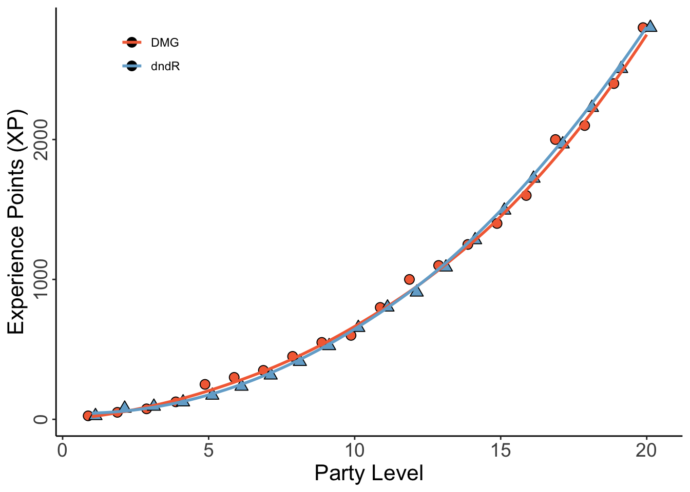

dndR::xp_pool(party_level = 2, party_size = 4, difficulty = "medium")[1] 625
When I am the Dungeon/Game Master (DM / GM) I find encounter balancing to be really difficult, in part because of the nest of interrelated tables and experience point multipliers outlined in the Dungeon Master’s Guide (DMG) that must be consulted for novice GMs such as myself. To help other newbies, dndR includes two core functions aimed at simplifying encounter balancing.
The difficulty of an encounter in D&D is affected by three things:
The DMG handles this by providing experience point (XP) thresholds based on these three factors. All enemies are worth a pre-determined amount of XP so encounters are balanced by the DMG listing the total XP of all monsters in a given fight for every level of players, party size, and difficulty. That table is useful but a little dense to work through as you’re prepping potentially multiple encounters per session, so this is where xp_pool becomes useful.
xp_pool returns the amount of XP the GM can ‘spend’ on monsters in a given encounter to ensure the difficulty is as desired based on the three factors identified above.
dndR::xp_pool(party_level = 2, party_size = 4, difficulty = "medium")[1] 625In the above case, the DM can have their four-person, level two party face creatures worth a total of 625 XP and be reasonably confident that the difficulty will be somewhere in the middle.
However, while knowing the amount of XP available to the DM per encounter is helpful, it fails to account for the effect of the number of enemies. A fight versus a single monster worth 1000 XP is a very different proposition than a fight against four creatures each worth 250 XP even though the total XP is the same.
The DMG accounts for this by providing XP multipliers based on the number of monsters and the number of players. The same total monster XP is multiplied by a larger value for more monsters facing a smaller party than it would be for fewer monsters facing a larger party.
So, if you are using the DMG to balance an encounter you have to total up the XP of the monsters in an encounter and then go to a different part of the DMG where you can multiply that value by the multiplier in the relevant row of a second table which would then tell you the “actual” XP of the creatures you have selected. If you had too many or too few monsters you’d have to repeat this process iteratively until you identified the correct amount of “raw” XP to yield your desired “realized” XP in an encounter. Cumbersome, right?
dndR’s xp_cost function provides an alternative to using the multiplier table. xp_cost requires the “raw” XP of the monsters you have selected, the number of monsters, and the number of player characters (PCs) and returns the “realized” XP. You can then quickly compare this with the value return by xp_pool to determine whether you need to add or remove creatures from your encounter.
dndR::xp_cost(monster_xp = 1000, monster_count = 2, party_size = 3)[1] 1500That was a lot of content so let’s run through a quick example to see how xp_pool and xp_cost work together to make encounter balancing simpler. Let’s say I am running a game for four players, all level 3, and I want to design a hard encounter for them.
To begin, I’d identify the total XP I can spend to make an encounter of this difficulty using xp_pool.
dndR::xp_pool(party_level = 3, party_size = 4, difficulty = 'hard')[1] 1112Okay, so the pool of XP available for me to spend is 1,112. Keeping that threshold in mind, I can use xp_cost to check the value of two monsters worth (total) 500 XP against that threshold.
dndR::xp_cost(monster_xp = 500, monster_count = 2, party_size = 4)[1] 750I can see that I’m well under the XP threshold I have to play with so I can add a monster and see where that leaves me.
dndR::xp_cost(monster_xp = 750, monster_count = 3, party_size = 4)[1] 1500A little over because of the multiplier, so let’s say I change my mind and keep three monsters but change their identity to one with a lower XP value.
dndR::xp_cost(monster_xp = 600, monster_count = 3, party_size = 4)[1] 1200Basically right on target! I can now pick out my three monsters that total up to 600 XP raw and know that they will likely* make a hard encounter for my players! (* “Likely” because there is dice rolling involved and it is possible that the monsters roll well while my players roll badly or vice versa).
xp_pool versus the DMGWhile the DMG uses a significant reference table to figure out the experience point threshold of a given encounter, my function doesn’t!
The DMG specifies the XP threshold per player for a given difficulty and asks DMs to find those numbers for each party member and then add them together. xp_pool on the other hand, asks for the average player level and the party size. This difference keeps the function streamlined and flexible for parties of any size.
Rather than embedding the DMG’s table for encounter XP, xp_pool actually uses the formula for the line defining the XP-party level curve implicit in the DMG (I’m even more of a dork than creating this R package would suggest). This has the added benefit of being able to handle non-integer values for average party_level.
Below is a comparison of the DMG’s XP-to-party level curve (in red) versus the one obtained by xp_pool (in blue).
